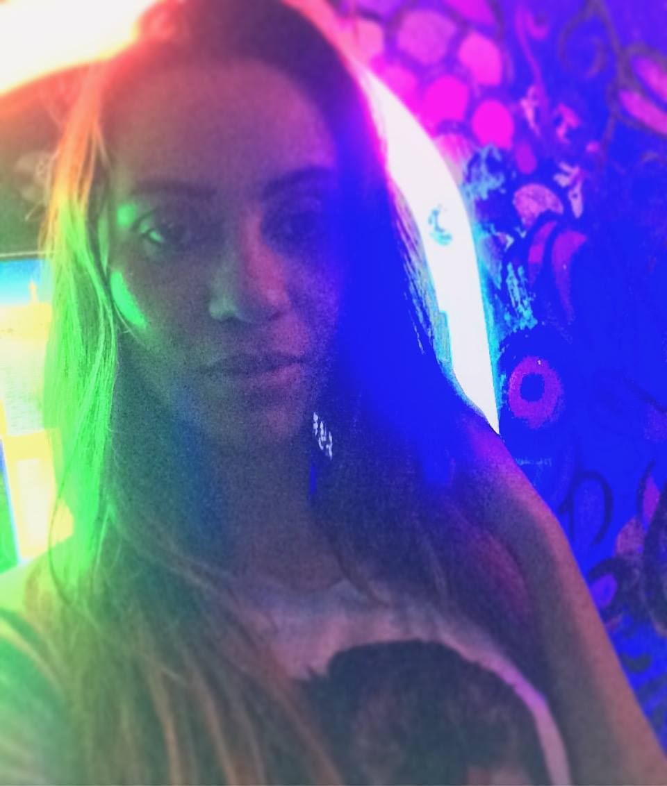
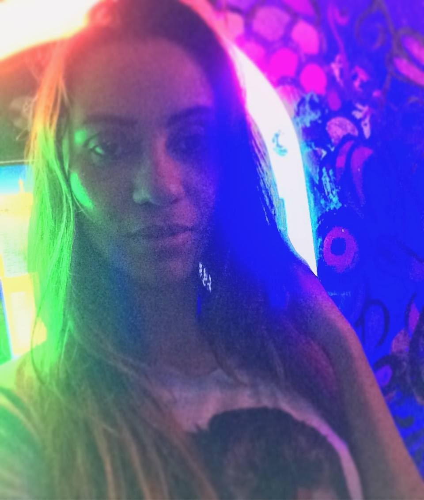

Mariana Aguiar
Olá, Sou a Mariana! Tenho 29 anos, nascida e criada em Recife e tenho algumas paixões nessa vida.
Escrever, ouvir música e conhecer novos lugares e culturas são as maiores delas.
Contato com a natureza e praias, assim como uma música com um solo bem feito são reenergizantes naturais.
Breve histórico sobre mim
Desde a infância eu já gostava de escrever as histórias que imaginava e hoje não é diferente.
Traduzir os meus sentimentos e comunicá-los são os meus maiores dons e prazeres.
Ouso dizer que a escrita é a minha maior vocação, inclusive aos 18 anos decidi seguir carreira acadêmica como pesquisadora para poder publicar minhas produções.
Nesta mesma época, eu ingressei num curso técnico de química que não segui adiante e na faculdade de gestão da informação que me permitiu conhecer os primeiros passos do universo da tecnologia. Apesar de ter tido a oportunidade de aprender de maneira introdutória, eu ainda me considerava insuficiente e receosa para realmente seguir carreira nesse campo e sempre procurava por atuações similares. A grande questão que predominava era a insegurança, sensação de impotência e incapacidade, falta de exemplos e motivação externa, mas nunca falta de habilidade técnica ou interesse.
No decorrer desse caminho, desenvolvi atividades com atendimento e pesquisas das mais variadas, mas nada em desenvolvimento. Inclusive no momento da pós graduação, aos 26 anos, relutei mais uma vez em ir pro front-end, optando pelo digital ainda, mas pelo marketing. Essa é só mais uma constatação de como funcionou a dificuldade do meu processo de aceitação que só veio acontecer de fato agora.

Quem é a Mariana Aguiar?
Bom, saindo desse contexto de carreiras e profissões, vou abordar como eu me vejo diante do momento atual de autoconhecimento. Sou uma pessoa super empática, preciso estar em constante busca do meu ponto de equilíbrio para não me envolver demais emocionalmente nas situações. Luto para sempre tomar as melhores e mais assertivas decisões.
Embora eu tenha meus momentos de introspecção e reflexão, de um modo geral, gosto de me sentir fazendo parte de vários grupos sociais onde possa ser apresentada a experiências agregadoras que ainda não conhecia, mesmo que eu não possa participar, gosto de ser convidada, ter amigos e pertencer. Os momentos de autoanálise sobre nossas atitudes são fundamentais para nos tornamos pessoas melhores. Reavaliar por quais caminhos eu poderia ter seguido para atingir um objetivo é algo que sempre tem me motivado. Eu desejo me tornar a minha melhor versão. Contudo, também sou muito comunicativa e tenho a habilidade de entrar e sair dos mais diversos grupos. Porém, só não costumo ser muito tolerante ao intolerante. rs
Além de escrever, amo música absurdamente, em tudo que eu faço a música está presente trazendo uma motivação especial.
Venho lidando e controlando muitas questões do meu lado afetivo e ansioso com música, especialmente o Rock, em todas as suas vertentes, desde o pop brasileiro,
passando pelo emo, clássico, punk e heavy metal. Mas também gosto de ouvir demais músicas alternativas como reggae, R&B, rap, trance e também música clássica, tango e MPB.
Já realizei oficina de cênicas e me expressar realmente é uma atividade que me emociona profundamente.
Amo artes e enxergo que a experiência de existir tem outro sabor com arte inclusa.
Realizar uma lista com as músicas que eu mais gosto realmente será uma tarefa árdua, mas vou tentar. Também vou apresentar o top 6 filmes da vida (espero que eu não tenho esquecido de nenhum) e que principalmente nessa pandemia têm me agregado muito valor.
 
 Dias Atuais
No início de 2020, pouco antes da chegada da pandemia ao Brasil, um fato particular me ocorreu que foi um divisor de águas.
Aprendi a enxergar a vida sob uma perspectiva mais otimista e valorizá-la muito mais.
Compreendi que somos feitos de pequenas jornadas que nos conduzem a destinos incríveis. É válido aproveitar cada etapa.
Este foi o fator motivacional que me fez encarar todos os sonhos adormecidos: inclusive fazer finalmente um curso de desenvolvimento! Minha formação é numa área correlata, mas ainda havia uma resistência.
Passei a fazer psicoterapia e vou fazer atividades físicas, aula de dança, aprender outros idiomas e instrumentos musicais, conhecer todos lugares que sempre sonhei, sonhos de consumo rs
Tenho uma filha chamada Maria Clara e ela é a minha maior razão. É por ela que eu venho lutando e ela também foi na minha vida a responsável pela evolução e por ter me tornado quem sou.
Essa coragem chegou e é libertadora, recomendo que todas possam sentir isso e persistir sempre por tudo que desejam. Aprender a se lançar a novos desafios antes inimagináveis traz ganhos extraordinários ao cérebro.